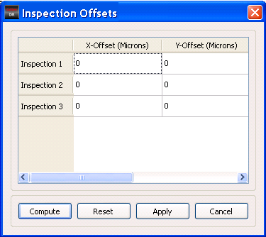

Before computing
the Repeatability Analysis results, you can compute the shift in
all inspections with respect to the reference inspection.
Procedure
- Click the Set Values button in the Inspection
Offsets pane. The Inspection Offsets dialog box appears.
Figure 1. Inspection Offsets
- Click Compute to compute the offsets automatically.
- After the computation is performed,
you can edit the values by double-clicking in each of the cells
- Click Apply.
Note: The Reset button
resets all the values to their defaults (the values displayed before
the any changes were made).
- The automatic offset computation
algorithm uses two parameters, step and length. These two parameters
can be configured in the dat-ini.xml file.
To change these parameters edit the following fields:
<offsetInfo>
<steps>0.25</steps>
<length>3</length>
<offsetInfo>